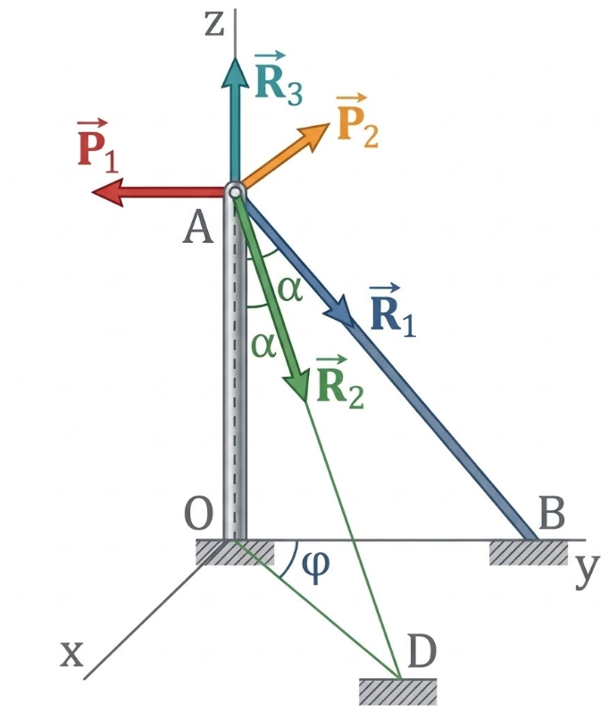
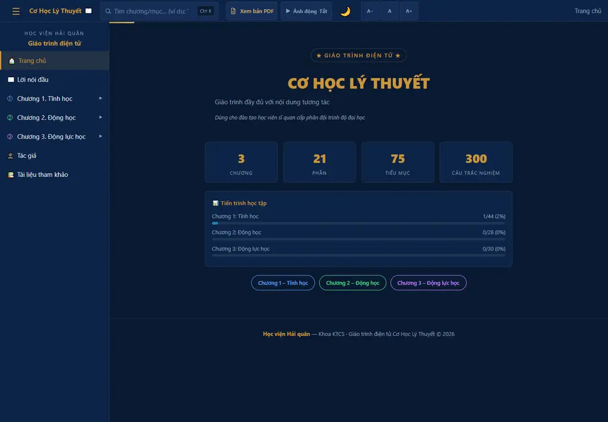
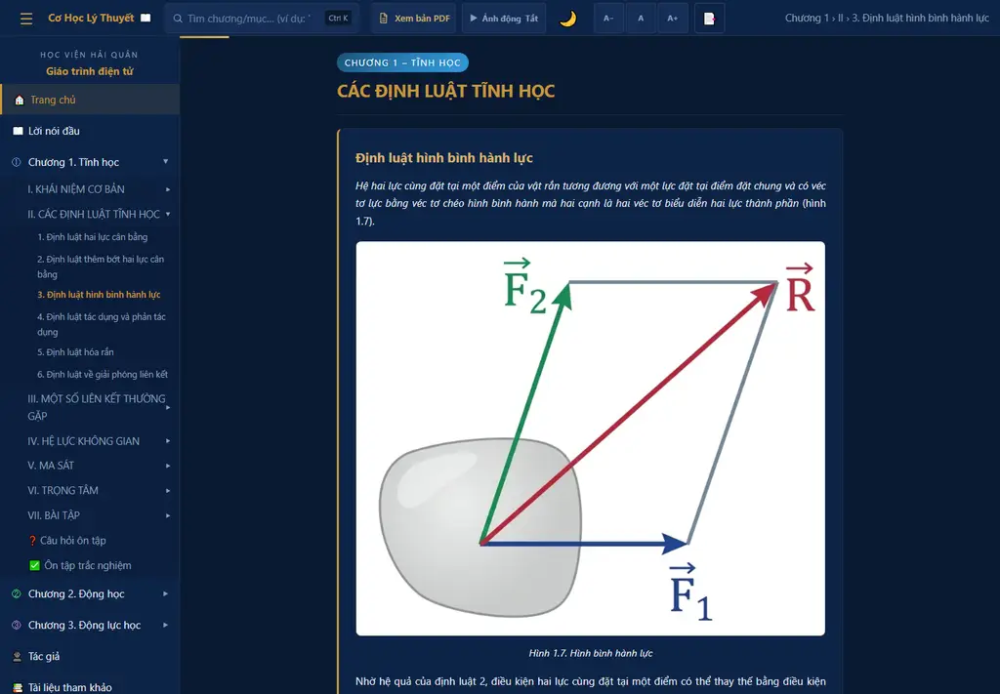
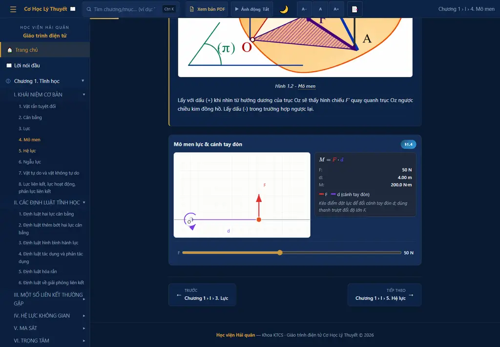
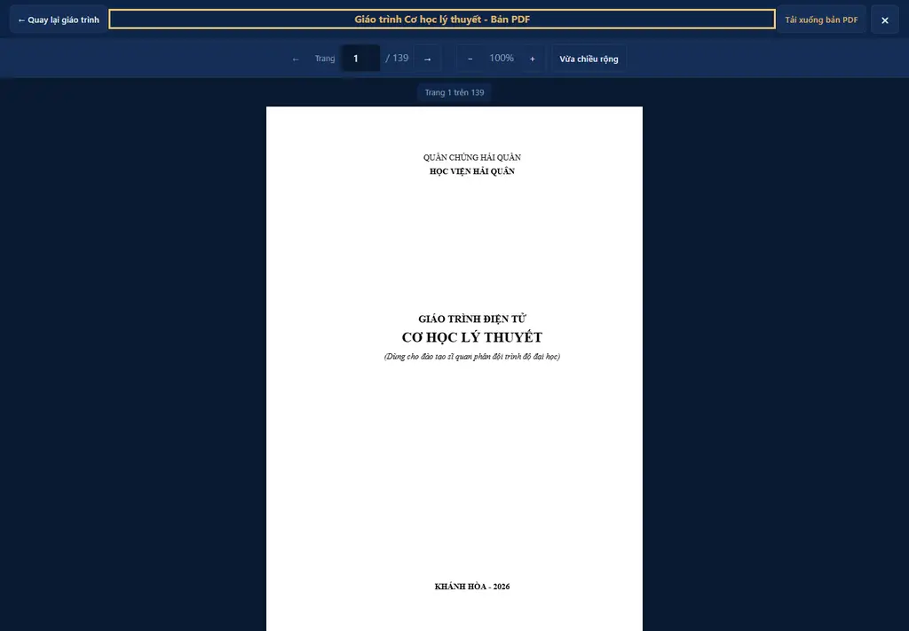
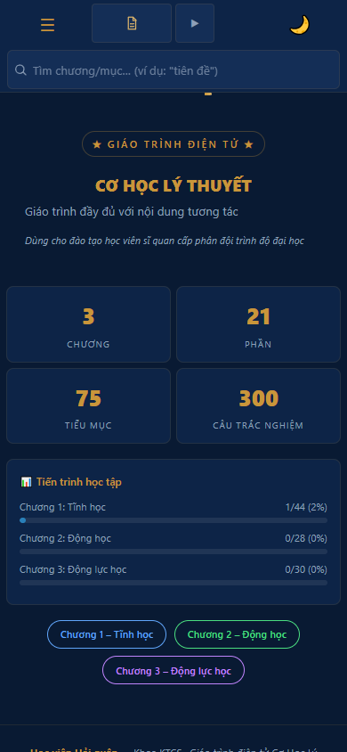

Báo cáo nghiệm thu kết quả xây dựng học liệu điện tử phục vụ đào tạo sĩ quan phân đội
Lực · liên kết · cân bằng
Chuyển động điểm · vật rắn
Lực · chuyển động · định lý tổng quát

Hình canonical Chương 1 · data/content-manifest.json
CoHocLyThuyet_Full_New.docx → HTML · PDF · package108 route · mục lục · tìm kiếm
1 302 lần công thức · 127 hình
25 Sim2 · 10 Sim3 pilot
300 câu hỏi · phản hồi tức thì
Tiến độ · dấu trang · ghi chú

Ảnh chụp thực tế trang chủ candidate

IMG-03 · bài học Chương 1

IMG-04 · route ch1-1-4 · ảnh chụp thực tế
F = 50 N; kéo điểm đặt lực để đổi d.
d đo vuông góc từ tâm tới giá lực.
d = 4,00 m → M = 200 N·m.
Chiều quay và readout cập nhật cùng state.
1 · Mở gói
2 · Thao tác mô men

3 · Đối chiếu PDF

Viewport 390 × 844
Không có gate fail; 4 gate chờ đúng chủ thể độc lập đóng.
Sim2 · đường chạy chuẩn
SVG-first · mặc định · không phụ thuộc WebGL.
3D tùy chọn · lỗi setup/render → trở về Sim2.
Tệp `CoHocLyThuyet_Full_New.docx` do 3 tác giả biên soạn theo đề cương.
Pipeline tự động kiểm tra cú pháp; Hội đồng nghiệm thu tính đúng sư phạm.
Chính sách chất lượng yêu cầu đủ chữ ký thẩm định độc lập của con người.
Runtime hỗ trợ `file://` và HTTP tĩnh; smoke độc lập trên thiết bị thật vẫn là điều kiện mở.
QTI 3.0 và Common Cartridge 1.4 đã kiểm tra cục bộ; chưa có bằng chứng import trên LMS đích.
Hoàn tất 4 hồ sơ độc lập, chạy lại 24 cổng và mới trình khóa bản phát hành cuối.